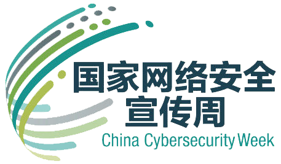

2019网络安全宣传周
介绍:
“国家网络安全宣传周”即“中国国家网络安全宣传周”，是为了“共建网络安全，共享网络文明”而开展的主题活动，围绕金融、电信、电子政务、电子商务等重点领域和行业网络安全问题，针对社会公众关注的热点问题，举办网络安全体验展等系列主题宣传活动，营造网络安全人人有责、人人参与的良好氛围。
以“网络安全为人民，网络安全靠人民”为主题的2019年国家网络安全宣传周9月22日落幕。这场天津开幕全国开展的网络“盛宴”却余味悠长，关于“网络安全”的话题既惊动“庙堂”，又呼应“民间”。
- Play
- Pause
- Bgm: --
Copyright © 2019
兰州大学 | Page From :
2017级计算机基地班：杨添宝